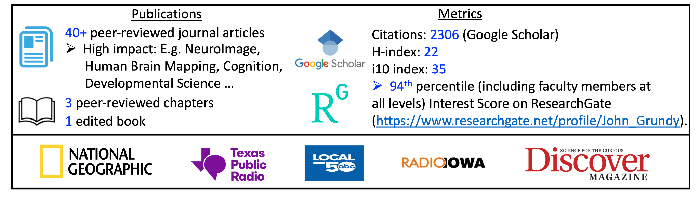

Scientific diligence before you commit capital, credibility, or institutional support.
I provide independent scientific and methodological review for investors, founders, institutions, and decision-makers evaluating products, platforms, or proposals built on complex empirical, theoretical, or mechanistic claims.
The focus is not promotional positioning. It is analytical clarity: what the claim actually says, what assumptions it depends on, whether the evidence supports the inference being made, and where meaningful technical risk may still sit.
What I do
- Clarify what a scientific or technical claim actually asserts, and what it does not.
- Surface key assumptions, including implicit assumptions that often go untested.
- Stress-test the alignment between evidence, mechanism, methods, and inference.
- Identify plausible failure modes, sources of overclaiming, and decision-relevant uncertainty.
The aim is not certainty. It is cleaner judgment under scrutiny.
- Independent written diligence
- Technical review that can be shared internally
- Explicit separation of facts, assumptions, uncertainty, and inference
- Readable by both technical and non-technical stakeholders
- Investment, legal, medical, or regulatory advice
- Advocacy, endorsement, or founder-side promotion
- Ghostwriting or marketing copy
- A substitute for experiments, validation work, or specialist counsel
Who this is for
I am typically most useful when the core issue is not market size or business strategy, but whether the underlying science, methods, or mechanistic reasoning can bear the weight being placed on them.
Deliverables
Clients receive a written review memo prepared for internal decision-making. Reviews explicitly separate claims, assumptions, evidence, methodological issues, uncertainty, and bottom-line implications.
A one-page decision brief can also be provided for executive circulation.
Scope and fixed-fee pricing are set after initial review of materials. Engagements are priced by complexity, not hourly time.
Engagement process
Why me
My background is in cognitive science and psychology, with extensive experience evaluating empirical claims, theoretical framing, mechanism-based arguments, and methodological quality. I have worked as an academic researcher, published and peer-reviewed scientific work, and built a reputation around theory development and big-picture scientific interpretation.
That makes this service most valuable when a decision turns on whether a scientific narrative is actually well-supported, or simply sounds persuasive on the surface.
What you should expect from my review
- Clear distinctions between established findings, extrapolation, and speculation
- Attention to mechanistic plausibility rather than just headline claims
- A written record that can be retained, revisited, and shared internally
- Direct language when something is weak, overstated, or unsupported
Selected indicators of research impact and public engagement
A compact snapshot of publications, citation profile, research visibility, and selected media coverage relevant to independent scientific review.

Independence and scope
How engagements are scoped
- Scope is defined in advance.
- Conclusions are not pre-specified.
- Findings are documented accurately and in full in the written review.
- How the review is used after delivery is the client’s responsibility.
Relationship to ERN Institute
I am the founder of ERN Institute, a separate scholarly publishing and research infrastructure initiative. This review service is offered independently and is not conducted on behalf of ERN Institute or its journals.
Contact
If you are considering a review, email me with: (1) what is being evaluated, (2) what decision it informs, and (3) what materials are currently available. If it is not a fit, I will say so quickly.
Email: john@johnggrundy.com
I do not offer promotional endorsements, scientific white-labeling, or outcome guarantees.